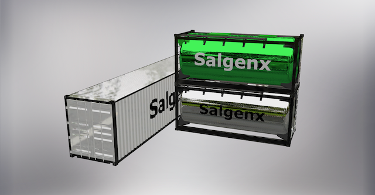
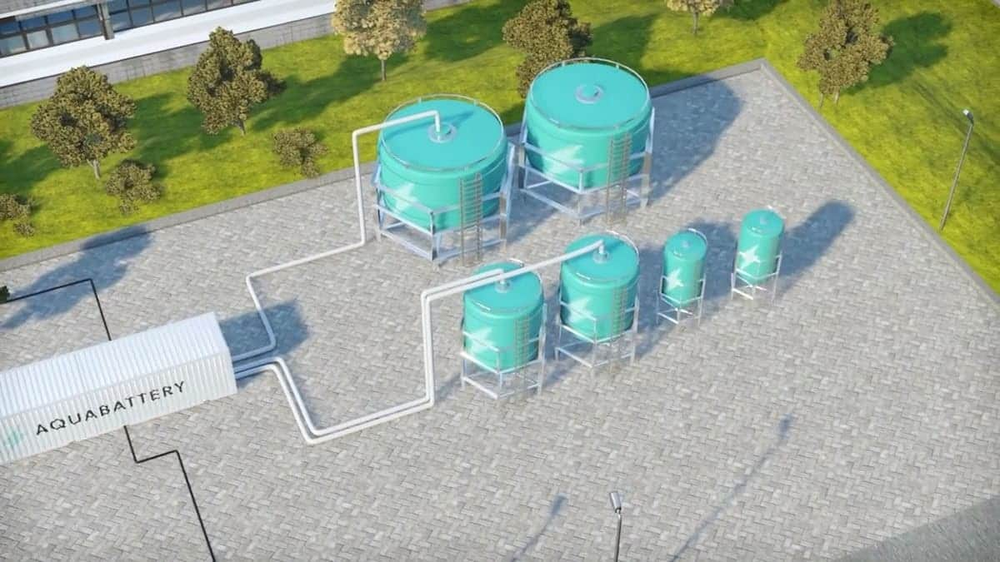

Baterias de agua salada en el mercado
Las baterias de agua salada estan emergiendo como una tecnologia prometedora en el campo del almacenamiento de energia, ofreciendo varial alternativas innovadoras frente a las baterias tradicionales de litio
-Salgenx S3000:
Desarrollada por Infinity Turbine LLC, esta batería de flujo de agua salada es capaz de almacenar 3,000 kWh de energía. Lo que la distingue es su capacidad para utilizar electrolitos de agua salada sin necesidad de membranas costosas o metales como el vanadio. Además, puede ser utilizada tanto para almacenamiento eléctrico como térmico, lo que la hace versátil y rentable, con un costo de producción de aproximadamente 100 dólares por kWh y una vida útil de unos 25 años.
-Aquabattery:
En una colaboración entre la empresa noruega Statkraft y la startup holandesa Aquabattery, se está desarrollando una batería de flujo basada en agua salada diseñada para almacenamiento de energía de larga duración. Este sistema emplea agua y sal para almacenar electricidad en soluciones ácidas y básicas, que luego pueden generar energía de nuevo al mezclarse. Esta tecnología promete ser una opción segura, no tóxica.